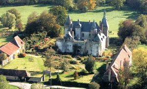
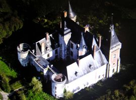
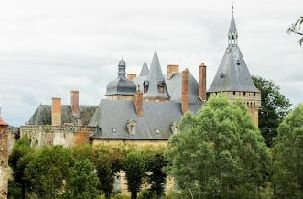
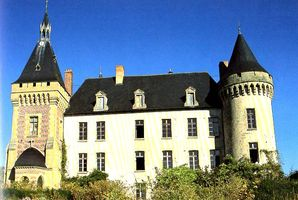
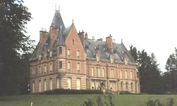
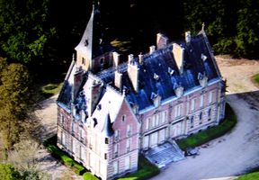
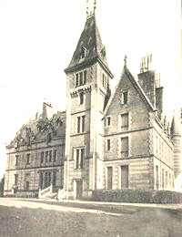

Recensement Jean-Claude Truffet
| Département | 03 — Allier |
| Canton | Bourbon-l`Archambault |
| Commune | Vieure |
| Type d'édifice | Château |
| Période d'origine | XIX |







Deux châteaux à Vieuren la Salle du XIV-XIXe siècle avec tour et Chaussière du XIXe siècle. CHAUSSIERE, château construit par Théodore Riant vers 1875, bâti en briques et en pierres, avec une toiture d'ardoises, a remplacé l'ancien château du XIVe siècle, dont il reste des ruines dans le parc. Une chapelle complète l'ensemble. Le vieux château était une résidence des ducs de Bourbon et le siège d'une châtellenie ducale, il fut ruiné par les guerres de religion et la Fronde. LA-SALLE, en 1382 Pierre de Vieure époux de Jeanne de la Salle, en 1473 Jean de Vieure conseiller du duc de Bourbon transforma le château en demeure agréable, en 1685 il fut saisi et adjugé au profit d'Isabelle de Chamborant la Clavière, une riche héritière du Bourbonnais, ensuite Il a souvent changé de mains, confisqué à la Révolution, il est vendu comme bien national et appartient successivement aux familles Michelon, Daubertès et Riant. Le château conserve le souvenir de la légende de Loïse de Vieure, l'unique fille du seigneur de la Salle mourut le jour de son mariage.
Chaussière, le château a été construit entre 1876 et 1878 dans un style mêlant néo-gothique et néo-Renaissance. Un corps de bâtiment unique allongé, avec la partie sud-ouest légèrement élargie, et l'abside pentagonale de la chapelle, à l'opposé, sur la partie gauche de la façade latérale. Sur la façade principale, une échauguette forme l'angle avec la façade latérale. Elle se termine en encorbellement vers le bas est coiffée d'un toit en poivrière. La partie décorative adopté pour la façade est le même que celui des châteaux dits "Louis XIII", un jeu de couleurs entre la brique, la pierre et l'ardoise. La partie droite de cette façade est occupée en son rez-de-chaussée par la chapelle. L'abside s'orne d'un balcon aux balustres séparés par des arcs gothiques. Aux 4 angles supérieurs de ce balcon s'élèvent quatre pinacles, et aux quatre angles inférieurs quatre gargouilles. Cet édifice est un pastiche à la fois du style gothique et du style Louis XIII sa construction en fait un témoignage de l'architecture romantique en Bourbonnais. La salle, il a l'apparence d'un château fort transformé par la suite en résidence, château de structure médiévale du XIVe siècle, traces de pont-levis, douves profondes grande cour médiévale, grosses tours rondes à mâchicoulis. Agrandi vers 1875 par l'architecte Moreau. La partie nord le donjon rectangulaire et tours rondes d'angles fut conservée tandis que les ailes en retour furent dotées de nouveaux percements et de nouvelles toitures. Pour les relier, une autre aile fut édifiée, flanquée d'une tour carrée de style néogothique et néo-Louis XIII. Vastes communs du XVIIIe siècle.
Famille de Théodore Riant Famille de Pierre de Vieure "
Château de Chaussière et de la Salle à Vieure